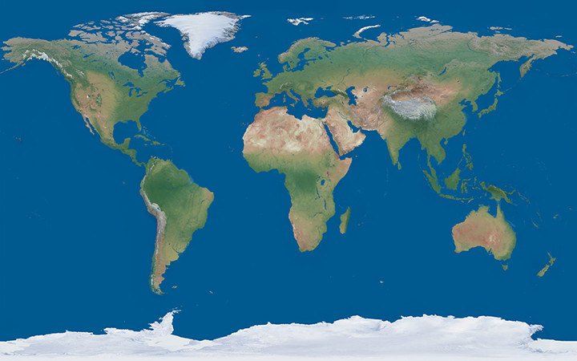
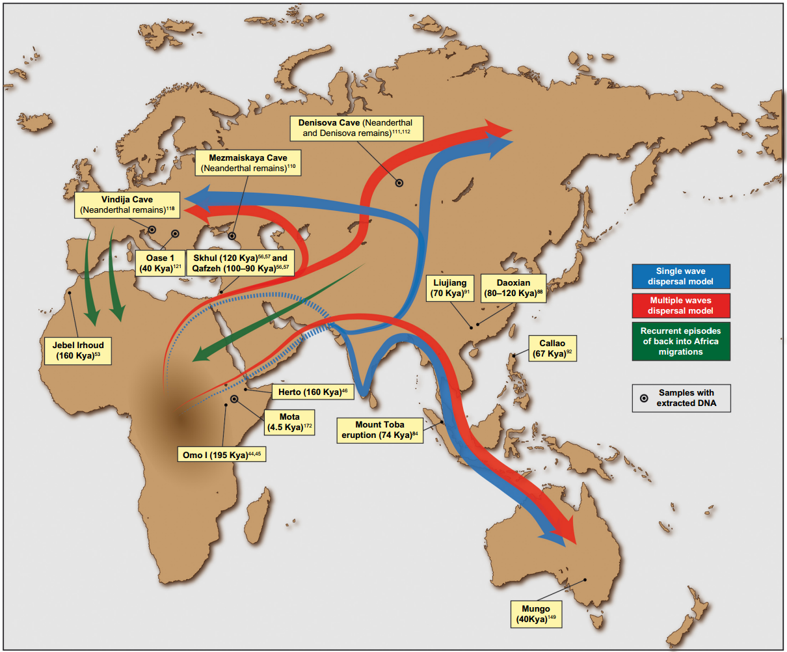

The migration of early humans is the earliest example of migrations and expansions of modern and ancient humans across continents. The migrations are predicted to have started about 2 million years ago, with the Homo Erectus early travels out of Africa. This migration was followed by other ancient humans, such as Homo Heidelbergensis, which lived 500,000 years ago. About 300,000 years ago, in Africa, early modern humans spread around the time of their speciation. The African origin theory implies that Homo Sapiens living outside of Africa descended from a population who migrated from East Africa 70-50,000 years ago, disseminating along the southern coast of Asia and to Oceania about 50,000 years ago, and populating Europe about 40,000 years ago. As well, archaic Eurasian human fossils, which date from 177,000 to 210,000 years old, have been discovered in both Greece and Palestine. These fossils are thought to represent failed migration attempts by modern humans, who were most probably replaced by local Neanderthals. After the final Glacial Maximum, North Eurasian populations migrated to the Americas about 20,000 years ago. Arctic Canada, as well as Greenland, was reached by the Paleo-Eskimo migration 4,000 years ago. Polynesia was colonized in the past 2,000 years in the last migration wave of the Austronesians.
Legend:
Multiple Wave Migration
Singular Wave Migration
Migration Back to Africa
Click on each button to see the wave of migrations to Asia, Australia, and Europe:

Click each button to read about the locations of major ancient human remains and archeological sites!
Mezmaiskaya Cave, or Мезмайская пещера, is an archaic cave site that overlooks the right bank of the Sukhoi Kurdzhips in the southern Russian Republic of Adygea, in the northwestern hills of the North Caucasus in the Caucasus Mountains. The first excavations of the Mezmaiskaya Cave uncovered Mousterian artifacts of the Last Glacial Maximum. In another exhumation, three Neanderthal individuals were retrieved from the cavern. The first of the three, dubbed Mezmaiskaya 1, was found in 1993 and is an almost complete skeleton in a well-preserved state. Mezmaiskaya 1 was determined to be an infant that was about two weeks old, making it the youngest Neanderthal retrieved. Mezmaiskaya 1 is incidentally dated to around 70-60,000 years ago. As well, 24 skull fragments of a 1-2-year-old Neanderthal child, or Mezmaiskaya 2, were found in 1994. A recovered tooth was assigned to Mezmaiskaya 3. Mezmaiskaya 2 is from around 44,600-42,960 BP. As well, data analysis reveals that Mezmaiskaya 2 was a male. Vindija Cave is an archaeological site associated with Neanderthals and modern humans. The cave is located in the city of Donja Voća, in northern Croatia. The cave is located about 20 km west of the city of Varaždin and 10 km north of Ivanec. It is estimated that Neanderthals used 40,000 years ago, which is about 8000 years before modern humans populated that area of Europe. The hominid specimens discovered are regarded as Neanderthals, but they share multiple traits with modern Europeans rather than the traditional Neanderthal. These traits include a thinner brow ridge, reduced face size, as well as smaller front teeth. Peștera cu Oase or the Cave with Bones is a cave system of 12 chambers located close to the city of Anina, in Caras-Severin county, southwestern Romania. This cave is where some of the oldest early European modern human remains have been uncovered, which date from 37,000 to 42,000 years old. In 2003, a research team discovered new remains on the cave’s surface. An entire cranial skeleton was found, along with a mostly complete left temporal bone and several bone segments. Oase 1 exhibits morphological traits from both early modern and archaic humans, such as Neanderthal features. As well, additional DNA analysis of Oase 1 since 2015 has allowed for many significant discoveries. The Qafzeh-Skhul early modern human remains are hominin fossils that were uncovered in the Es-Skhul and Qafzeh caves in Israel. Today, these remains are classified as Homo Sapiens and are the earliest of their species in Eurasia. Skhul Cave is located on the inclines of Mount Carmel, while Qafzeh Cave is a cave near Nazareth, Lower Galilee. The Skhul remains, which are Skhul 1-9, were discovered from 1929 to 1935 in a chamber in Es-Skhul Cave in Mount Carmel. The fossils were of seven adults and three children, and some of these, Skhul 1, 4, and 5, are thought to have been graves. The Qafzeh cave opens onto a wall of Wadi el Hadj in Mount Precipice. Exploration of the cave was begun in 1934 by René Neuville and ended in the discovery of the remains of five people. As well, in the lower layers of the caves, which dated back to 92,000 years ago, a series of hearths, human bodies, flint objects, animal bones, a cortical flake, seashells, and lumps of red ochre were found. Fossils of 15 hominids, dating back to 95,000 years ago, were recovered from Qafzeh. 8 of the 15 remains were identified as children, and the remains of Qafzeh 8, 9, 10, 11, 13, and 15 were classified as burials.
The Fuyan Cave, or 福岩洞, is a system of limestone caves in Tangbei village, Lefutang town, Daoxian, Hunan province, in south-central China. Fuyan Cave is famous for the uncovering of the oldest evidence for unmistakably fully modern humans outside Africa. 47 human teeth, which dated from 80,000 to 120,000 years ago, were discovered there. The teeth were considered unusual for not showing any indications of cavities, something typically not found in teeth older than 50,000 years ago. However, a later DNA analysis found that these remains were younger than was previously presumed. The Liujiang men, or 柳江人, are among the earliest Homo Sapiens found in East Asia. The remains of the Liujiang men were found in the Tongtianyan Cave in Liujiang, Guangxi, China. The remains of the hominids were excavated in 1958. The fossils are comprised of a well-preserved adult cranium, a right hip bone, a complete sacrum, multiple vertebrae, and two femoral fragments. All of these remains are thought to have belonged to one individual. Little information about the fossils because of a lack of academic papers released in the United States. As well, the Liujiang specimen was found to have many similarities to modern-day East and Southeast Asian people. The remains are thought to date from approximately the Late Pleistocene to 68,000 years ago. The term Herto Man refers to the 160-154,000-year-old Homo Sapien remains. The fossils were found in 1997 in the Upper Herto Member of the Bouri Formation in the Afar Triangle, Ethiopia. The uncovering of Herto Man was particularly important at the time since it fell within a gap in the fossil record between 300-100,000 years ago, making Herto Man the oldest-to-date Homo Sapien fossil. Herto Man is thought to have created several stone tools that can fit into the vague term of Transitional Acheulean, which is the tradition with both Acheulean and Middle Stone Age tools. Herto Man might have been killing hippo and bovines in a lakeside environment. The three most complete skulls have cut marks and several other alterations, which could be proof of burial traditions. Tracking the travels of archaic modern humans has been problematized by human migrations both out of and into Africa. Gallego Llorente sequenced an Ethiopian individual dubbed Mota, who lived around 4,500 years ago, preceding a migration surge of individuals into Africa from Eurasia. Genetic data suggest modern-day Sardinians were the potential origin of Eurasian counter flux. Additionally, 4-7% of African genomes, like Yoruba and Mbuti Pygmies, are derived from this Eurasian genotype. The Youngest Toba eruption was a supervolcanic explosion that occurred 75,000 years ago at present-day Lake Toba in Sumatra, Indonesia. The Toba eruption is one of the Earth’s largest known explosive combustions. The Toba catastrophe theory states that this eruption caused a global volcanic winter of 6-10 years and conceivably a 1,000-year cooling period. In 1993, Ann Gibbons, a science journalist, proposed that a population decrease happened in human adaptation approximately 70,000 years ago. Gibbons expressed that this could have been caused by the Toba eruption. In 1998, Gibbon’s theory was further researched by Stanley H. Ambrose, an anthropologist at the University of Illinois at Urbana-Champaign. The link between the evolution of early modern humans and the eruption, and the global winter theories, are extremely controversial. The exact spread of modern human populations at the time of the eruption is unknown, but groups that survived may have afterward travelled to other areas of the world. Analyses of DNA have estimated that major travels from Africa transpired 60,000-70,000 years ago, which is consistent with the Youngest Toba eruption about 75,000 years ago. Denisova Cave, or Денисова пещера, is a cave located in the Bashelaksky Range of the Altai mountains, in Siberia, Russia. Items such as bone fragments of the Denisova hominin and artifacts to around 40,000 BP originate from this cave. The cave is situated in a place thought to have been inhabited by Neanderthals and modern humans. Neanderthals and related hybrids could have lived in the Denisova Cave for long periods, but likely not at the same time. It is uncertain if the needle and other objects in the cave belong to either Homo Sapiens or the Denisova Hominin, also known as Homo Denisova. Jebel Irhoud, or جبل إيغود, is an archeological site situated north of Tlet Ighoud, 50 km southeast of Safi, Morocco. The site is noted for the discoveries of hominid fossils that have been found since the initial finding of the site in 1960. Thought originally to be neanderthals, the uncovered specimens have since been classified as Homo Sapiens or Homo Helmei, and as of 2017, have been dated to roughly 300,000 years ago. Excavations of the site have uncovered several fossils, which are Irhoud 1, a skull, Irhoud 2, part of another skull, Irhoud 3, the lower mandible of a child, Irhoud 4, a humerus, and Irhoud 5, a hip bone. Further digging carried out by American researchers and another team led by Jean-Jacques Hublin have discovered animal remains. These animal fossils have allowed the archaic ecology of the area to be reconstructed by scientists. The ecology is thought to have been a dry, open and prairie habitat, roamed by bovids, gazelles, rhinoceros, and various other predators. The Lake Mungo remains, found in New South Wales, Australia, are the three most prominent sets of human remains that could be Aboriginal Australian. Mungo woman, or Lake Mungo 1, was uncovered in 1969 by Jim Bowler and is one of the oldest known cremations. As well, the preservation of the fossils is quite poor. Very little data was published before the bones were given to the Australian Indigenous people in 1992. The repatriation caused a limited supply of bone casts and lack of information made it difficult to assess the published papers. The remains dubbed Mungo man, or Lake Mungo 3, were found in 1974 by geomorphologist Jim Bowler and are dated to around 40,000 years ago, during the Pleistocene epoch. Mungo Man, or Lake Mungo 3, is the oldest Homo Sapien fossil discovered in Australia. It is thought that Lake Mungo 3 was an example of a burial practice performed by early humans. The Omo remains are a series of hominin bones discovered from 1967-1974 at the Omo Kibish archaeological sites near the Omo River, in Omo National Park, Ethiopia. The fossils were discovered by a scientific team directed by Richard Leaky. The bones found at Kamoya’s Hominid Site, or KHS, were dubbed Omo I, while those from PHS, or Paul I. Abell’s Hominid Site, were called Omo II. The fossils found at the sites include two incomplete skulls, four jaw bones, a leg bone, about two hundred teeth, as well as several other parts. Omo I and Omo II are categorized as Homo Sapiens but vary from each other with numerous traits. As well, the Omo I fossils consist of more modern biological characteristics, while Omo II displays some primal traits. The Homo Luzonensis, or the Ubag, is an extinct species of ancient humans from the Last Pleistocene located in Luzon, Philippines. The fossils of this species were found only in Callao Cave and are thought to date back to 50,000 years ago. In 2010, the remains were defined as belonging to Homo Sapiens, but after the finding of more specimens in 2019, they were classified as a new species. The ancestors of this species, who may have been the Asian Homo Erectus, must have made a sea crossing of several kilometres to reach the island of the Philippines. The first of the remains were found in 2007 in Northern Luzon and were categorized in 2010 as modern human remains. In 2019, however, due to the finding of 12 new fossils and the existence of both modern and primitive characteristics, scientists recategorized the bones to a new species, called Homo Luzonensis, the term being derived from the name of the island.
